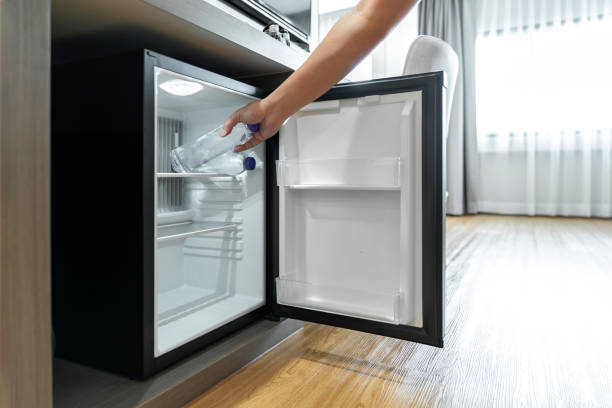
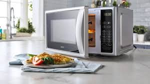

Sumérgete en el lujo y la comodidad de nuestras exquisitas habitaciones y suites, donde cada detalle ha sido cuidadosamente diseñado para brindarte una experiencia de descanso y relajación sin igual.
Habitaciones
Entra en nuestra habitación de hotel impecablemente amueblada, donde el confort moderno se encuentra con la comodidad. Relájese con estilo con una cama acogedora y manténgase entretenido con una elegante TV que ofrece una variedad de canales. Para sus necesidades culinarias, hay un práctico microondas, un refrigerador conveniente y una cafetera a su servicio. ¿Necesitas ponerte al día con el trabajo? Siéntese en el espacio de trabajo dedicado con una silla cómoda y una amplia iluminación. Su comodidad es nuestra prioridad, y cada detalle ha sido cuidadosamente curado para garantizar una estancia encantadora.
Eleve su Estancia con las Amenidades In-Room y la Limpieza en Seco Sin complicaciones
Cuando elige quedarse con nosotros, no solo está reservando una habitación; está desbloqueando un mundo de conveniencia y comodidad. Nuestro compromiso de hacer que su estadía sea excepcional se extiende más allá de la ropa de cama cómoda y el servicio cortés. Weimos ha curado cuidadosamente una gama de comodidades en la habitación que satisfacen sus necesidades, asegurando que su estadía sea lo más agradable posible.
Servicios de la habitacion
¿Que ofrece?
Imagen referencial
Refrigerador
Mantenga sus bebidas refrigeradas y almacene sus bocadillos favoritos para los antojos nocturnos. No es necesario salir a tomar una bebida fría o preocuparse por el deterioro de los alimentos.

Microondas
Calienta las sobras o disfruta de una comida rápida sin salir de la comodidad de tu habitación. Es perfecto para calentar sus comidas reconfortantes favoritas.

Cafetera
Comience el día con una taza de café o té recién hecho. Disfrute de la comodidad de hacer su cerveza matutina sin tener que salir de su habitación.
Habitaciones
Dos Habitaciones King
Gratifíquese con la privacidad y el amplio espacio de nuestras habitaciones Two King Bed, que cuentan con dos habitaciones distintas, cada una amueblada con una lujosa cama king-size. También puede disfrutar de una taza de café de cortesía mientras ve sus programas favoritos en uno de nuestros televisores LED premium. Esta suite garantiza que todos disfruten de la habitación que necesitan de una manera verdaderamente lujosa.
Suite Ejecutiva One King Bed
¡Diseñada pensando en el lujo, esta suite notablemente espaciosa y contemporánea ofrece una experiencia encantadora! La Suite Ejecutiva King cuenta con una cama king-size junto con un espacio de vida distinto y un área de comedor/conferencia, lo que garantiza la máxima comodidad. El sofá cama permite una estancia tranquila con capacidad para cuatro personas. También se incluye un Desayuno Buffet Americano de cortesía.